Yasu, Shiga: things to do, food and stays
Yasu · Shiga
Yasu
Highlighted on the Shiga map.

Stay
セントラルホテル野洲
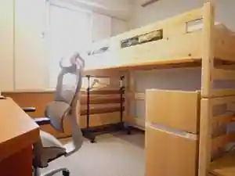
Sentoraru Hotel Yasu
Hotel in Ichizotaku, Yasu with Wi-Fi; 2-minute walk from Jryasu Station.
ビジネスホテルタカラ
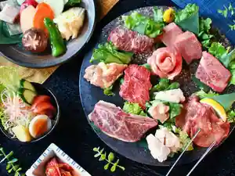
Business Hotel Takara
Hotel in Koshinohara, Yasu with parking and business travelers; 20-minute drive from Meishinkosokuryuo IC.
Dining
魚の穂音
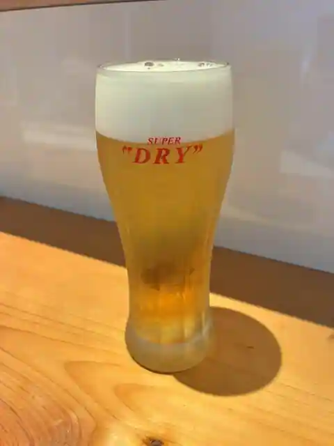
Sakana No Ho Oto
さつま富士
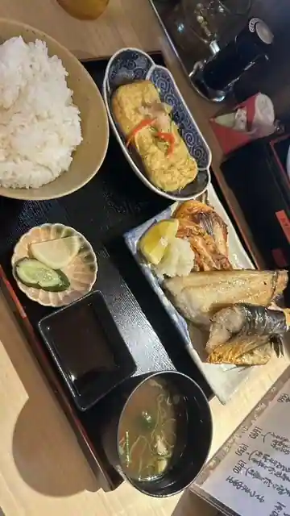
Satsuma Fuji
其先
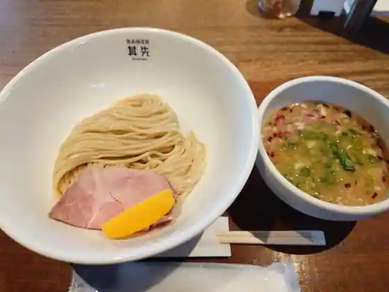
Sono Saki
オーパスワン
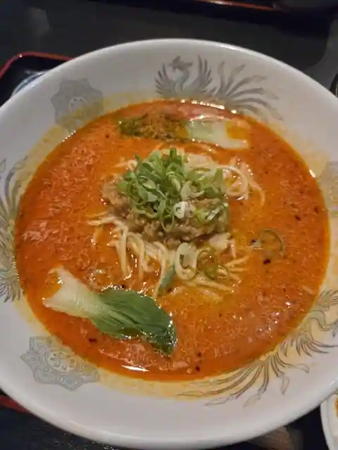
Opasuwan
和食 近江牛 しのび
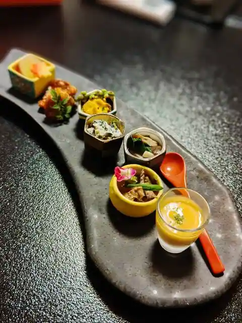
Washoku Omi Ushi Shinobi
旬鮮味処 かつら
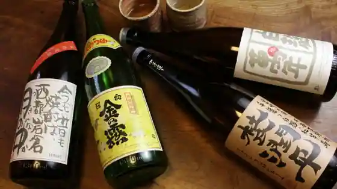
Jun Sen Ajidokoro Katsura
ビストロ コテ
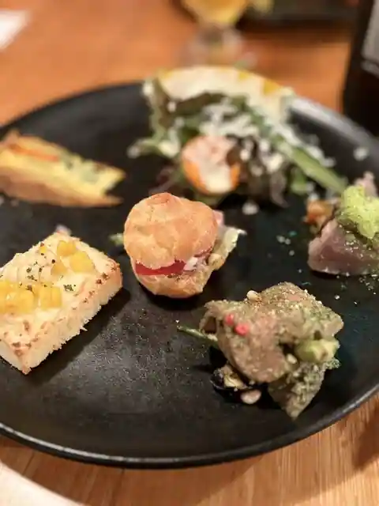
Bistro Kote
麺屋 豊
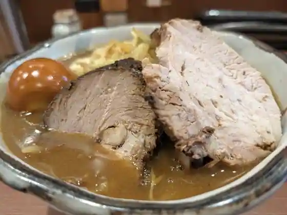
Men Ya Yutaka
ブーランジェリー コフレ
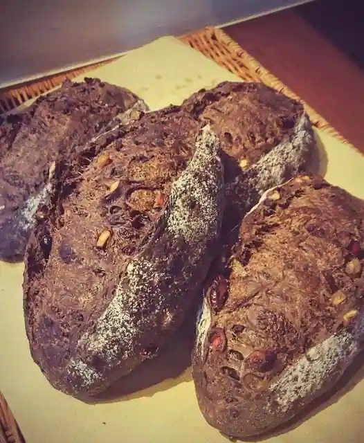
Buranjieri Kofure
中国菜 秀
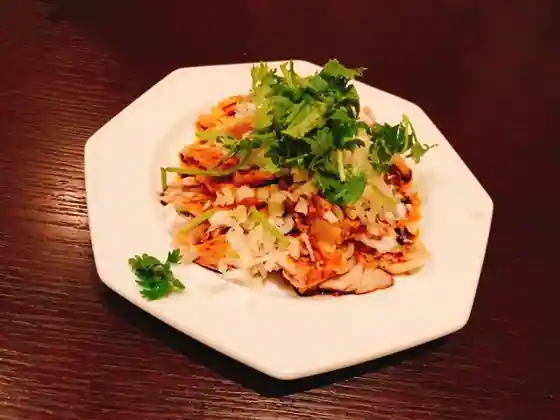
Chugoku Na Shu
スプーン 野洲本店
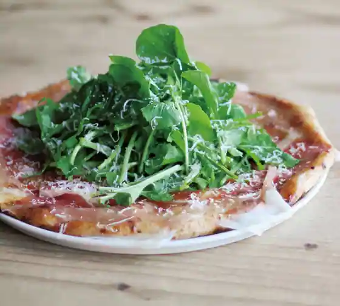
Supun Yasu Hon
Stagione
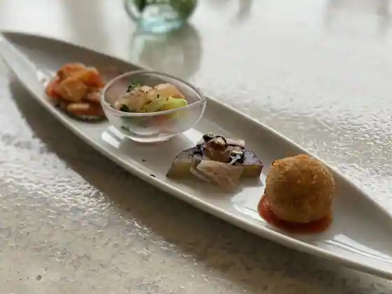
Stagione
NOBODA store
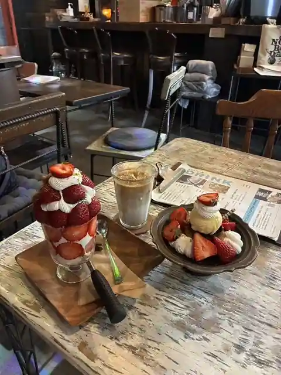
NOBODA store
旬彩鰻彩 きた川
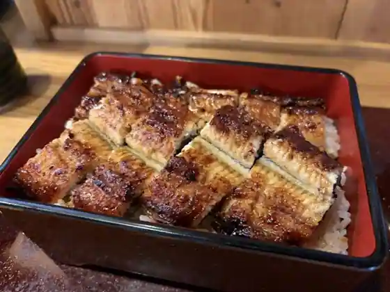
Jun Sai Unagi Sai Kita Kawa
自画自賛
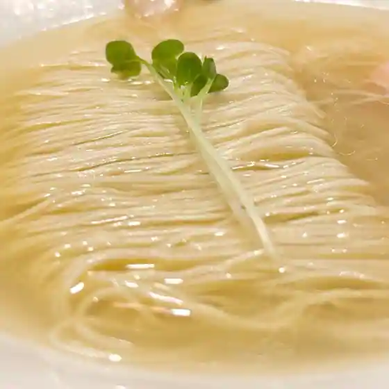
Jigajisan
俺のカレー食堂 輪
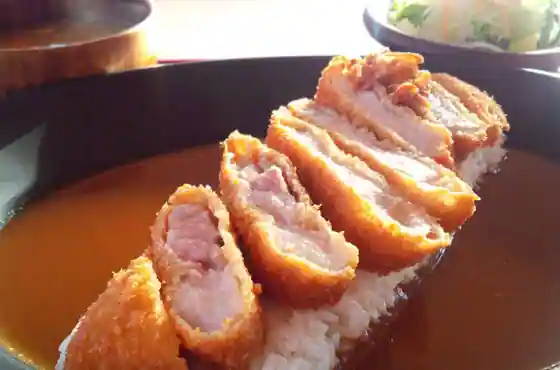
Ore No Kare Shokudo Wa
ビワコ・ドーターズ
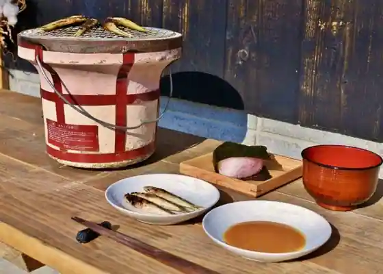
Biwako Dotazu
天空
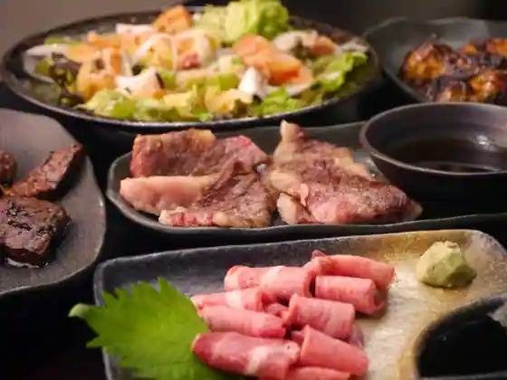
Tenku
本格炭火焼うなぎ 近江牛 沙羅
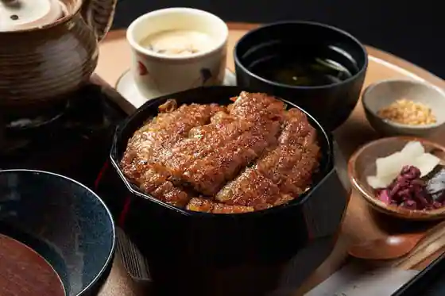
Honkaku Sumibi Yaki Unagi Omi Ushi Sara
スプーンガーデンレストラン
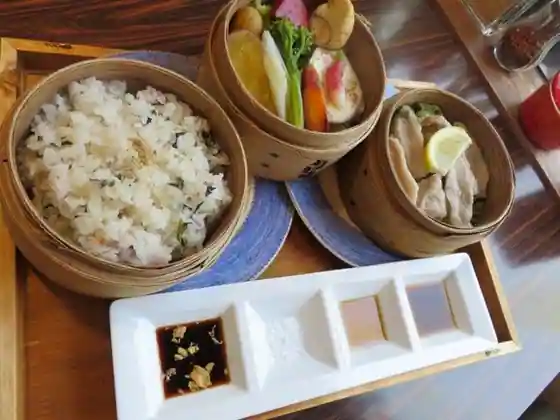
Supun Garden Restaurant
洋食・喫茶 たけ
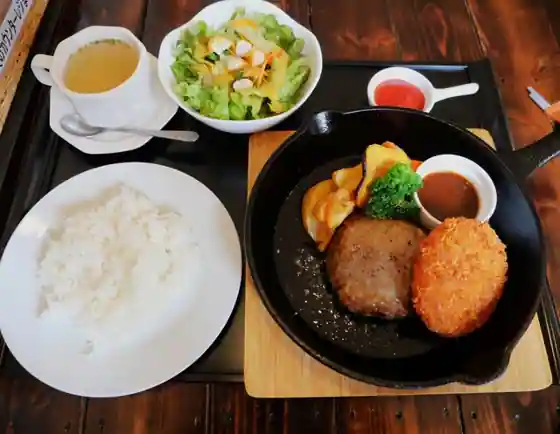
Yoshoku Kissa Take
和牛焼肉たから
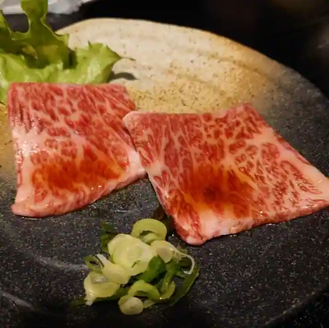
Wagyu Yakiniku Takara
鳥男
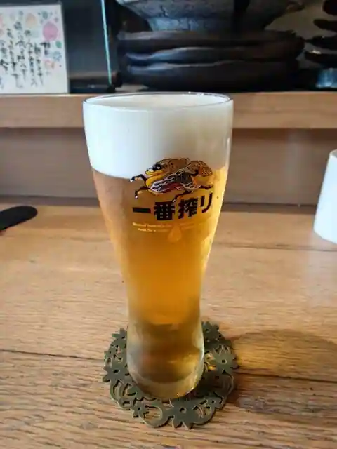
Toriotoko
Sights
Enkoji
Ichigo & Buruberii Sono Feriiche

Yasu Sogo Gym

Shigaken Kibogaoka Bunka Park Supotsu Hall

Gio Tera

Ozasa Hara Shrine
Sakura Nama Shiseki Park
Bijinesu Hotel Takara
TOYOTA SHARE Sentoraru Hotel Yasu
Heike Shuen no Chi
Maiami Hama Oto Campground
Yasu Bunka Horu
Biwakomaiami Land (Maiami Hama)
Shiga Prefectural Omi Fuji Karoku Park
Japan Bass Fishing Agent
Mikami Yama
Okami Shrine
Kinsho Kanroku Yukari no Ie
JR Yasu Eki
Dotaku Museum (Yasu Rekishi Minzoku Museum)
Rencho Tera
Nishikiori Tera
Sakura Ryokuchi
Bussho Tera
Hei Shu Taisha
Somuku Rabe Jizo
Fukubayashi Jiseki Magai Hotoke
Mentai Park Biwa Mizumi
Yasu Yakusho